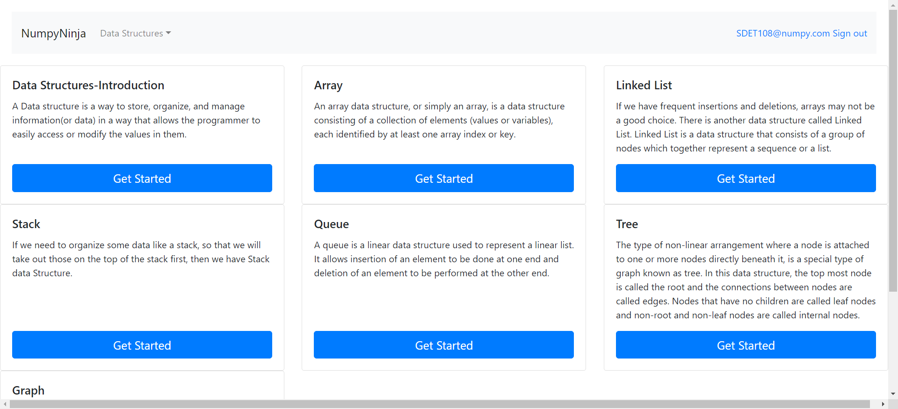
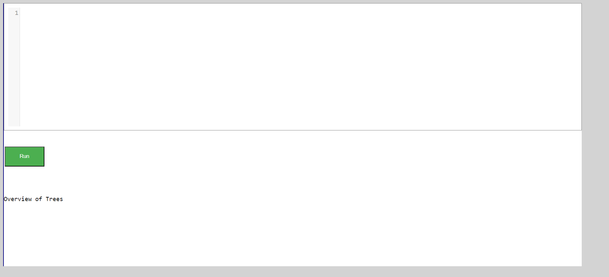
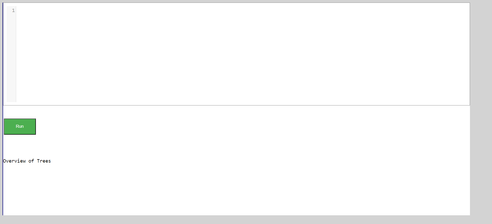
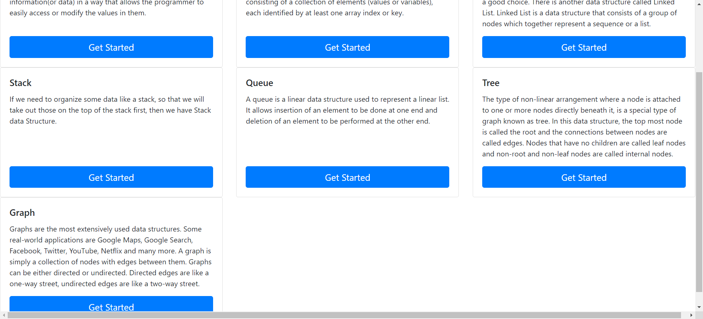

-
GetStart Page
10:10:24 AM / 00:00:06:553 Pass
GetStart Page
05.15.2023 10:10:24 AM 05.15.2023 10:10:30 AM 00:00:06:553 · #test-id=1PassUser launch Start page of an dsalgo projectGiven The User launches the Chrome browserWhen The user opens DS Algo portal linkAnd The user clicks the Get Started buttonThen The user should be redirected to homepage with page title as "NumpyNinja" -
Home Page
10:10:31 AM / 00:00:05:316 Pass
Home Page
05.15.2023 10:10:31 AM 05.15.2023 10:10:36 AM 00:00:05:316 · #test-id=10PassUser is on Home page and click getstarted link/dropbox on home page without sign inPassUser is on Home page and click getstarted link/dropbox on home page without sign inWhen The user clicks on Get Started link on homepage "Array" without loginThen The user get warning message "You are not logged in"When The user select options from dropbox menu on homepage "Array" without loginThen The user get warning message "You are not logged in" -
Register Page validation
10:10:36 AM / 00:00:30:738 Pass
Register Page validation
05.15.2023 10:10:36 AM 05.15.2023 10:11:07 AM 00:00:30:738 · #test-id=20PassUser click register button on Home pageGiven User is on Home Page of DS Algo PortalWhen The user clicks the Register button on Home pageThen The User will be navigated to Register Page with title as "Registration"PassUser click register button with all fields blankWhen The user clicks the Register button on register page with all fields value emptyThen Error message is displayed "Please fill out this field. below Username textbox"PassUser click on register button with Password field blankWhen The user clicks the Register button on register page with valid Username and Password fields value emptyThen Error message is displayed "Please fill out this field. below Password textbox"PassUser click on register button with valid Username & Password and confirm Password field as blankPassUser click on register button with valid Username & Password and confirm Password field as blankWhen The user clicks the Register link on register page with Password as "abcd@1234" confirmPassword fields value emptyThen Error message is displayed "Please fill out this field. below confirm Password textbox"PassThe user is on Register Page and entered invalid user DetailsPassThe user is on Register Page and entered invalid user DetailsWhen User enter Invalid signUp details on register page from given sheetname "RegisterPage" and 0And The user clicks Register buttonThen Registration failed and error message is displayedPassThe user is on Register Page and entered invalid user DetailsWhen User enter Invalid signUp details on register page from given sheetname "RegisterPage" and 1And The user clicks Register buttonThen Registration failed and error message is displayedPassThe user is on Register Page and entered invalid user DetailsWhen User enter Invalid signUp details on register page from given sheetname "RegisterPage" and 2And The user clicks Register buttonThen Registration failed and error message is displayedPassThe user is on Register Page and entered invalid user DetailsWhen User enter Invalid signUp details on register page from given sheetname "RegisterPage" and 3And The user clicks Register buttonThen Registration failed and error message is displayedPassThe user opens Register Page and entered valid user DetailsPassThe user opens Register Page and entered valid user DetailsWhen User enter Valid signUp details on register page UserName , Password as "abcd@124" and ConfirmPassword as "abcd@124"And The user clicks Register buttonAnd User will be navigated to Home page of DS AlgoThen successMessage will be displayed "New Account Created. You are logged in as"PassUser logout from application after registrationWhen User clicks on signOut link on Home pageThen Message will be displayed as "Logged out successfully" -
SignIn
10:11:07 AM / 00:00:25:636 Pass
SignIn
05.15.2023 10:11:07 AM 05.15.2023 10:11:32 AM 00:00:25:636 · #test-id=91PassUser entered invalid login details on Login PagePassUser entered invalid login details on Login PageGiven User is on Home Page of DS Algo PortalWhen User clicks on signIn link on Home pageThen User is navigated to Login Page title as "Login"When User entered login details from sheet "SignIn" and 0Then Error message is displayedPassUser entered invalid login details on Login PageGiven User is on Home Page of DS Algo PortalWhen User clicks on signIn link on Home pageThen User is navigated to Login Page title as "Login"When User entered login details from sheet "SignIn" and 1Then Error message is displayedPassUser entered valid login details on Login PagePassUser entered valid login details on Login PageWhen User entered Username as "SDET108@numpy.com" and Password as "abcd@1234"Then Success message is displayedAnd User is navigated to Home page of DsAlgo PortalWhen User clicks on signOut link on Home pageThen Message will be displayed as "Logged out successfully" -
Data Structure Intro
10:11:32 AM / 00:00:31:547 Pass
Data Structure Intro
05.15.2023 10:11:32 AM 05.15.2023 10:12:04 AM 00:00:31:547 · #test-id=121PassUser entered valid login details on Login Page and logged inPassUser entered valid login details on Login Page and logged inGiven User is on Home Page of DS Algo PortalWhen User clicks on signIn link on Home pageAnd User entered Username as "SDET108@numpy.com" and Password as "abcd@1234"Then User is navigated to Home page of DsAlgo PortalPassUser navigate to Data Structure Page for selected Topic and click on Try Here buttonWhen The user clicks on DataStructure GetStarted button on homepage "Data Structures-Introduction"Then User will be navigated to Data Structures-Introduction page title as "Data Structures-Introduction"When User clicks on Time Complexity linkThen User will be navigated to time-complexity page title as "Time Complexity"When User clicks Try Here button in the datastructure pageThen User should be redirected tryEditor page title as "Assessment" with a Run button to test Python codePassUser enter valid and invalid python code in tryEditorPassUser enter valid and invalid python code in tryEditorWhen User Enter Python code in tryEditor from "print 'Data Structures-Introduction'" for DataStructures topic and click Run buttonThen User should be presented with the Run output for valid Python code and Message for DataStructure PagePassUser enter valid and invalid python code in tryEditorWhen User Enter Python code in tryEditor from "print Data Structures-Introduction" for DataStructures topic and click Run buttonThen User should be presented with the Run output for valid Python code and Message for DataStructure PagePassUser navigate to Data Structure from dropdown and try Practice Question PageGiven User navigate back to dataStructure page of selected topicWhen User clicks Practice Questions Page on DataStructure PageThen User should be redirected to a Practice Questions Page of selected DataStructure Topic Page -
Array Page
10:12:04 AM / 00:02:22:186 Pass
Array Page
05.15.2023 10:12:04 AM 05.15.2023 10:14:26 AM 00:02:22:186 · #test-id=161PassUser validate dropboxPassUser validate dropboxGiven The User is on practice page of data StructureWhen The user select "Array" from dropbox menuWhen user is navigate to "Array" PagePassUser validate ArrayPagePassUser validate ArrayPageThen User click "Arrays in Python" link on Array pageAnd User clicks Try Here button of selected topicWhen User Enter valid Python code in tryEditor from "print 'Arrays in Python'" for topics in Array and click Run buttonThen User should be presented with the Run output for valid Python code and massege for Array PageWhen User Enter Invalid Python code in tryEditor from "print Arrays in Python" for topics in Array and click Run buttonThen User should be presented with alert and no runOutput for Invalid Python code for Array PageAnd User navigate back to Array topic listPassUser validate ArrayPageThen User click "Arrays Using List" link on Array pageAnd User clicks Try Here button of selected topicWhen User Enter valid Python code in tryEditor from "print 'Arrays Using List'" for topics in Array and click Run buttonThen User should be presented with the Run output for valid Python code and massege for Array PageWhen User Enter Invalid Python code in tryEditor from "error Arrays Using List" for topics in Array and click Run buttonThen User should be presented with alert and no runOutput for Invalid Python code for Array PageAnd User navigate back to Array topic listPassUser validate ArrayPageThen User click "Basic Operations in Lists" link on Array pageAnd User clicks Try Here button of selected topicWhen User Enter valid Python code in tryEditor from "print 'Basic Operations in Lists'" for topics in Array and click Run buttonThen User should be presented with the Run output for valid Python code and massege for Array PageWhen User Enter Invalid Python code in tryEditor from "error Basic Operations in Lists" for topics in Array and click Run buttonThen User should be presented with alert and no runOutput for Invalid Python code for Array PageAnd User navigate back to Array topic listPassUser validate ArrayPageThen User click "Applications of Array" link on Array pageAnd User clicks Try Here button of selected topicWhen User Enter valid Python code in tryEditor from "print 'Applications of Array'" for topics in Array and click Run buttonThen User should be presented with the Run output for valid Python code and massege for Array PageWhen User Enter Invalid Python code in tryEditor from "error Applications of Array" for topics in Array and click Run buttonThen User should be presented with alert and no runOutput for Invalid Python code for Array PageAnd User navigate back to Array topic listPassPracticeQuestion PageWhen user click on practice QuestionThen User will be navigated to Practice Question Array page as "Practice Questions"PassUser validate PracticeQuestion Array PagePassUser validate PracticeQuestion Array PageThen User click "Search the array" on practice question Array pageThen User should clear textcode in tryEditorWhen User entered valid Python code in tryEditor "PythonCode" and 0 and click Run buttonThen User should be presented with the Run output for valid Python code and massege for Array PageAnd User navigate back to Array topic listPassUser validate PracticeQuestion Array PageThen User click "Max Consecutive Ones" on practice question Array pageThen User should clear textcode in tryEditorWhen User entered valid Python code in tryEditor "PythonCode" and 1 and click Run buttonThen User should be presented with the Run output for valid Python code and massege for Array PageAnd User navigate back to Array topic listPassUser validate PracticeQuestion Array PageThen User click "Find Numbers with Even Number of Digits" on practice question Array pageThen User should clear textcode in tryEditorWhen User entered valid Python code in tryEditor "PythonCode" and 2 and click Run buttonThen User should be presented with the Run output for valid Python code and massege for Array PageAnd User navigate back to Array topic listPassUser validate PracticeQuestion Array PageThen User click "Search the array Squares of a Sorted Array" on practice question Array pageThen User should clear textcode in tryEditorWhen User entered valid Python code in tryEditor "PythonCode" and 3 and click Run buttonThen User should be presented with the Run output for valid Python code and massege for Array PageAnd User navigate back to Array topic list -
Linked List
10:14:26 AM / 00:02:03:864 Pass
Linked List
05.15.2023 10:14:26 AM 05.15.2023 10:16:30 AM 00:02:03:864 · #test-id=258PassUser navigate to Linked List Page for selected Topic aGiven The User is on practice page of ArrayWhen The user select "Linked List" from homepage dropDown menuThen User will be navigated to LinkedList page title as "Linked List"PassUser click on Try Here button and enter valid and invalid python code in tryEditor for LinkedListPassUser click on Try Here button and enter valid and invalid python code in tryEditor for LinkedListWhen User click "Introduction" to select topics covered on Link List pageWhen User clicks Try Here button in the Linked List of selected topic pageThen User should be redirected tryEditor page title as "Assessment" with a Run button to test Python codeWhen User Enter valid Python code in tryEditor from "print 'LinkedList Introduction'" for for LinkedList topic and click Run buttonThen User should be presented with the Run output for valid Python code and Message for for LinkedList PageWhen User Enter Invalid Python code in tryEditor from "error LinkedList Introduction" for for LinkedList topic and click Run buttonThen User should be presented with alert and no runOutput for Invalid Python code for LinkedList PageAnd User navigate back to LinkedList page of selected topicPassUser click on Try Here button and enter valid and invalid python code in tryEditor for LinkedListWhen User click "Creating Linked LIst" to select topics covered on Link List pageWhen User clicks Try Here button in the Linked List of selected topic pageThen User should be redirected tryEditor page title as "Assessment" with a Run button to test Python codeWhen User Enter valid Python code in tryEditor from "print 'LinkedList createLinkedList'" for for LinkedList topic and click Run buttonThen User should be presented with the Run output for valid Python code and Message for for LinkedList PageWhen User Enter Invalid Python code in tryEditor from "error LinkedList createLinkedList" for for LinkedList topic and click Run buttonThen User should be presented with alert and no runOutput for Invalid Python code for LinkedList PageAnd User navigate back to LinkedList page of selected topicPassUser click on Try Here button and enter valid and invalid python code in tryEditor for LinkedListWhen User click "type of" to select topics covered on Link List pageWhen User clicks Try Here button in the Linked List of selected topic pageThen User should be redirected tryEditor page title as "Assessment" with a Run button to test Python codeWhen User Enter valid Python code in tryEditor from "print 'Types of Linked List'" for for LinkedList topic and click Run buttonThen User should be presented with the Run output for valid Python code and Message for for LinkedList PageWhen User Enter Invalid Python code in tryEditor from "error Types of Linked List" for for LinkedList topic and click Run buttonThen User should be presented with alert and no runOutput for Invalid Python code for LinkedList PageAnd User navigate back to LinkedList page of selected topicPassUser click on Try Here button and enter valid and invalid python code in tryEditor for LinkedListWhen User click "Implement Linked" to select topics covered on Link List pageWhen User clicks Try Here button in the Linked List of selected topic pageThen User should be redirected tryEditor page title as "Assessment" with a Run button to test Python codeWhen User Enter valid Python code in tryEditor from "print 'Linked List Implement Linked'" for for LinkedList topic and click Run buttonThen User should be presented with the Run output for valid Python code and Message for for LinkedList PageWhen User Enter Invalid Python code in tryEditor from "error Implement Linked" for for LinkedList topic and click Run buttonThen User should be presented with alert and no runOutput for Invalid Python code for LinkedList PageAnd User navigate back to LinkedList page of selected topicPassUser click on Try Here button and enter valid and invalid python code in tryEditor for LinkedListWhen User click "Traversal" to select topics covered on Link List pageWhen User clicks Try Here button in the Linked List of selected topic pageThen User should be redirected tryEditor page title as "Assessment" with a Run button to test Python codeWhen User Enter valid Python code in tryEditor from "print 'Linked List Traversal'" for for LinkedList topic and click Run buttonThen User should be presented with the Run output for valid Python code and Message for for LinkedList PageWhen User Enter Invalid Python code in tryEditor from "error LinkedList Traversal" for for LinkedList topic and click Run buttonThen User should be presented with alert and no runOutput for Invalid Python code for LinkedList PageAnd User navigate back to LinkedList page of selected topicPassUser click on Try Here button and enter valid and invalid python code in tryEditor for LinkedListWhen User click "Insertion" to select topics covered on Link List pageWhen User clicks Try Here button in the Linked List of selected topic pageThen User should be redirected tryEditor page title as "Assessment" with a Run button to test Python codeWhen User Enter valid Python code in tryEditor from "print 'Linked List Insertion'" for for LinkedList topic and click Run buttonThen User should be presented with the Run output for valid Python code and Message for for LinkedList PageWhen User Enter Invalid Python code in tryEditor from "error Insertion" for for LinkedList topic and click Run buttonThen User should be presented with alert and no runOutput for Invalid Python code for LinkedList PageAnd User navigate back to LinkedList page of selected topicPassUser click on Try Here button and enter valid and invalid python code in tryEditor for LinkedListWhen User click "Deletion" to select topics covered on Link List pageWhen User clicks Try Here button in the Linked List of selected topic pageThen User should be redirected tryEditor page title as "Assessment" with a Run button to test Python codeWhen User Enter valid Python code in tryEditor from "print 'Linked List Deletion'" for for LinkedList topic and click Run buttonThen User should be presented with the Run output for valid Python code and Message for for LinkedList PageWhen User Enter Invalid Python code in tryEditor from "error LinkedList Deletion" for for LinkedList topic and click Run buttonThen User should be presented with alert and no runOutput for Invalid Python code for LinkedList PageAnd User navigate back to LinkedList page of selected topicPassUser navigate back to selected LinkedList Topic Page and try Practice Question PageWhen User clicks Practice Questions Page on LinkedList PageThen User should be redirected to a Practice Questions Page of selected LinkedList Topic Page -
Stack
10:16:30 AM / 00:00:55:975 Fail
Stack
05.15.2023 10:16:30 AM 05.15.2023 10:17:26 AM 00:00:55:975 · #test-id=357FailUser entered valid login details on Login Page and logged inFailUser entered valid login details on Login Page and logged inGiven User is on Home Page of DS Algo PortalWhen User clicks on signIn link on Home pageAnd User entered Username as "SDET108@numpy.com" and Password as "abcd@1234"Step skippedThen User is navigated to Home page of DsAlgo PortalStep skippedstepDefinitions.Hooks.tearDown(io.cucumber.java.Scenario)User entered valid login details on Login Page and logged inPassUser navigate to Stack Page for selected Topic aWhen The user select "Stack" from homepage dropDown menuThen User will be navigated to Stack page title as "Stack"PassUser click on Try Here button and enter valid and invalid python code in tryEditor for StackPassUser click on Try Here button and enter valid and invalid python code in tryEditor for StackWhen User click "Operations in" to select topics covered on Stack pageWhen User clicks Try Here button in the Stack of selected topic pageThen User should be redirected tryEditor page title as "Assessment" with a Run button to test Python codeWhen User Enter valid Python code in tryEditor from "print 'Operations in Stack'" for Stack topic and click Run buttonThen User should be presented with the Run output for valid Python code and Message for for Stack PageWhen User Enter Invalid Python code in tryEditor from "error Operations in Stack" for Stack topic and click Run buttonThen User should be presented with alert and no runOutput for Invalid Python code for Stack PageAnd User navigate back to Stack page of selected topicPassUser click on Try Here button and enter valid and invalid python code in tryEditor for StackWhen User click "Applications" to select topics covered on Stack pageWhen User clicks Try Here button in the Stack of selected topic pageThen User should be redirected tryEditor page title as "Assessment" with a Run button to test Python codeWhen User Enter valid Python code in tryEditor from "print 'Applications in Stack'" for Stack topic and click Run buttonThen User should be presented with the Run output for valid Python code and Message for for Stack PageWhen User Enter Invalid Python code in tryEditor from "error Applications in Stack" for Stack topic and click Run buttonThen User should be presented with alert and no runOutput for Invalid Python code for Stack PageAnd User navigate back to Stack page of selected topicPassUser click on Try Here button and enter valid and invalid python code in tryEditor for StackWhen User click "Implementation" to select topics covered on Stack pageWhen User clicks Try Here button in the Stack of selected topic pageThen User should be redirected tryEditor page title as "Assessment" with a Run button to test Python codeWhen User Enter valid Python code in tryEditor from "print 'Implementation in Stack'" for Stack topic and click Run buttonThen User should be presented with the Run output for valid Python code and Message for for Stack PageWhen User Enter Invalid Python code in tryEditor from "error Implementation in Stack" for Stack topic and click Run buttonThen User should be presented with alert and no runOutput for Invalid Python code for Stack PageAnd User navigate back to Stack page of selected topicPassUser navigate back to selected Stack Topic Page and try Practice Question PageWhen User clicks Practice Questions Page on Stack PageThen User should be redirected to a Practice Questions Page of selected Stack Topic Page -
Queue
10:17:26 AM / 00:01:11:678 Fail
Queue
05.15.2023 10:17:26 AM 05.15.2023 10:18:38 AM 00:01:11:678 · #test-id=416FailUser entered valid login details on Login Page and logged inFailUser entered valid login details on Login Page and logged inGiven User is on Home Page of DS Algo PortalWhen User clicks on signIn link on Home pageAnd User entered Username as "SDET108@numpy.com" and Password as "abcd@1234"Step skippedThen User is navigated to Home page of DsAlgo PortalStep skippedstepDefinitions.Hooks.tearDown(io.cucumber.java.Scenario)User entered valid login details on Login Page and logged in PassUser navigate to Queue Page for selected Topic and click on Try Here buttonWhen The user select "Queue" from homepage dropDown menuThen User will be navigated to Queue page title as "Queue"PassUser click on Try Here button and enter valid and invalid python code in tryEditor for QueuePassUser click on Try Here button and enter valid and invalid python code in tryEditor for QueueWhen User click "Implementation of Queue in" to select topics covered on Queue pageWhen User clicks Try Here button in the Queue of selected topic pageThen User should be redirected tryEditor page title as "Assessment" with a Run button to test Python codeWhen User Enter valid Python code in tryEditor from "print 'Queue Implementation'" for Queue topic and click Run buttonThen User should be presented with the Run output for valid Python code and Message for for Queue PageWhen User Enter Invalid Python code in tryEditor from "error Queue Implementation" for Queue topic and click Run buttonThen User should be presented with alert and no runOutput for Invalid Python code for Queue PageAnd User navigate back to Queue page of selected topicPassUser click on Try Here button and enter valid and invalid python code in tryEditor for QueueWhen User click "Implementation using collections.deque" to select topics covered on Queue pageWhen User clicks Try Here button in the Queue of selected topic pageThen User should be redirected tryEditor page title as "Assessment" with a Run button to test Python codeWhen User Enter valid Python code in tryEditor from "print 'Implemenation using collections.deque'" for Queue topic and click Run buttonThen User should be presented with the Run output for valid Python code and Message for for Queue PageWhen User Enter Invalid Python code in tryEditor from "error Implemenation using collections.deque" for Queue topic and click Run buttonThen User should be presented with alert and no runOutput for Invalid Python code for Queue PageAnd User navigate back to Queue page of selected topicPassUser click on Try Here button and enter valid and invalid python code in tryEditor for QueueWhen User click "Implementation using array" to select topics covered on Queue pageWhen User clicks Try Here button in the Queue of selected topic pageThen User should be redirected tryEditor page title as "Assessment" with a Run button to test Python codeWhen User Enter valid Python code in tryEditor from "print 'Implemenation using Array'" for Queue topic and click Run buttonThen User should be presented with the Run output for valid Python code and Message for for Queue PageWhen User Enter Invalid Python code in tryEditor from "error Implemenation using Array" for Queue topic and click Run buttonThen User should be presented with alert and no runOutput for Invalid Python code for Queue PageAnd User navigate back to Queue page of selected topicPassUser click on Try Here button and enter valid and invalid python code in tryEditor for QueueWhen User click "Queue Operations" to select topics covered on Queue pageWhen User clicks Try Here button in the Queue of selected topic pageThen User should be redirected tryEditor page title as "Assessment" with a Run button to test Python codeWhen User Enter valid Python code in tryEditor from "print 'Queue Operations'" for Queue topic and click Run buttonThen User should be presented with the Run output for valid Python code and Message for for Queue PageWhen User Enter Invalid Python code in tryEditor from "error Queue Operations" for Queue topic and click Run buttonThen User should be presented with alert and no runOutput for Invalid Python code for Queue PageAnd User navigate back to Queue page of selected topicPassUser navigate back to selected Queue Topic Page and try Practice Question PageWhen User clicks Practice Questions Page on Queue PageThen User should be redirected to a Practice Questions Page of selected Queue Topic Page
PassUser navigate to Queue Page for selected Topic and click on Try Here buttonWhen The user select "Queue" from homepage dropDown menuThen User will be navigated to Queue page title as "Queue"PassUser click on Try Here button and enter valid and invalid python code in tryEditor for QueuePassUser click on Try Here button and enter valid and invalid python code in tryEditor for QueueWhen User click "Implementation of Queue in" to select topics covered on Queue pageWhen User clicks Try Here button in the Queue of selected topic pageThen User should be redirected tryEditor page title as "Assessment" with a Run button to test Python codeWhen User Enter valid Python code in tryEditor from "print 'Queue Implementation'" for Queue topic and click Run buttonThen User should be presented with the Run output for valid Python code and Message for for Queue PageWhen User Enter Invalid Python code in tryEditor from "error Queue Implementation" for Queue topic and click Run buttonThen User should be presented with alert and no runOutput for Invalid Python code for Queue PageAnd User navigate back to Queue page of selected topicPassUser click on Try Here button and enter valid and invalid python code in tryEditor for QueueWhen User click "Implementation using collections.deque" to select topics covered on Queue pageWhen User clicks Try Here button in the Queue of selected topic pageThen User should be redirected tryEditor page title as "Assessment" with a Run button to test Python codeWhen User Enter valid Python code in tryEditor from "print 'Implemenation using collections.deque'" for Queue topic and click Run buttonThen User should be presented with the Run output for valid Python code and Message for for Queue PageWhen User Enter Invalid Python code in tryEditor from "error Implemenation using collections.deque" for Queue topic and click Run buttonThen User should be presented with alert and no runOutput for Invalid Python code for Queue PageAnd User navigate back to Queue page of selected topicPassUser click on Try Here button and enter valid and invalid python code in tryEditor for QueueWhen User click "Implementation using array" to select topics covered on Queue pageWhen User clicks Try Here button in the Queue of selected topic pageThen User should be redirected tryEditor page title as "Assessment" with a Run button to test Python codeWhen User Enter valid Python code in tryEditor from "print 'Implemenation using Array'" for Queue topic and click Run buttonThen User should be presented with the Run output for valid Python code and Message for for Queue PageWhen User Enter Invalid Python code in tryEditor from "error Implemenation using Array" for Queue topic and click Run buttonThen User should be presented with alert and no runOutput for Invalid Python code for Queue PageAnd User navigate back to Queue page of selected topicPassUser click on Try Here button and enter valid and invalid python code in tryEditor for QueueWhen User click "Queue Operations" to select topics covered on Queue pageWhen User clicks Try Here button in the Queue of selected topic pageThen User should be redirected tryEditor page title as "Assessment" with a Run button to test Python codeWhen User Enter valid Python code in tryEditor from "print 'Queue Operations'" for Queue topic and click Run buttonThen User should be presented with the Run output for valid Python code and Message for for Queue PageWhen User Enter Invalid Python code in tryEditor from "error Queue Operations" for Queue topic and click Run buttonThen User should be presented with alert and no runOutput for Invalid Python code for Queue PageAnd User navigate back to Queue page of selected topicPassUser navigate back to selected Queue Topic Page and try Practice Question PageWhen User clicks Practice Questions Page on Queue PageThen User should be redirected to a Practice Questions Page of selected Queue Topic Page -
Tree
10:18:38 AM / 00:00:53:935 Fail
Tree
05.15.2023 10:18:38 AM 05.15.2023 10:19:32 AM 00:00:53:935 · #test-id=487FailUser entered valid login details on Login Page and logged inFailUser entered valid login details on Login Page and logged inGiven User is on Home Page of DS Algo PortalWhen User clicks on signIn link on Home pageAnd User entered Username as "SDET108@numpy.com" and Password as "abcd@1234"Step skippedThen User is navigated to Home page of DsAlgo PortalStep skippedstepDefinitions.Hooks.tearDown(io.cucumber.java.Scenario)User entered valid login details on Login Page and logged in PassUser navigate to Tree Page for selected Topic and click on Try Here buttonWhen The user select "Tree" from homepage dropDown menuThen User will be navigated to Tree page title as "Tree"FailUser click on Try Here button and enter valid and invalid python code in tryEditor for TreeFailUser click on Try Here button and enter valid and invalid python code in tryEditor for TreeWhen User click "Overview of Trees" to select topics covered on Tree pageWhen User clicks Try Here button in the Tree of selected topic pageThen User should be redirected tryEditor page title as "Assessment" with a Run button to test Python codeWhen User Enter valid Python code in tryEditor from "print 'Overview of Trees'" for Tree topic and click Run buttonThen User should be presented with the Run output for valid Python code and Message for for Tree PageWhen User Enter Invalid Python code in tryEditor from "error Overview of Trees" for Tree topic and click Run buttonThen User should be presented with alert and no runOutput for Invalid Python code for Tree PageStep skippedAnd User navigate back to Tree page of selected topicStep skippedstepDefinitions.Hooks.tearDown(io.cucumber.java.Scenario)User click on Try Here button and enter valid and invalid python code in tryEditor for Tree
PassUser navigate to Tree Page for selected Topic and click on Try Here buttonWhen The user select "Tree" from homepage dropDown menuThen User will be navigated to Tree page title as "Tree"FailUser click on Try Here button and enter valid and invalid python code in tryEditor for TreeFailUser click on Try Here button and enter valid and invalid python code in tryEditor for TreeWhen User click "Overview of Trees" to select topics covered on Tree pageWhen User clicks Try Here button in the Tree of selected topic pageThen User should be redirected tryEditor page title as "Assessment" with a Run button to test Python codeWhen User Enter valid Python code in tryEditor from "print 'Overview of Trees'" for Tree topic and click Run buttonThen User should be presented with the Run output for valid Python code and Message for for Tree PageWhen User Enter Invalid Python code in tryEditor from "error Overview of Trees" for Tree topic and click Run buttonThen User should be presented with alert and no runOutput for Invalid Python code for Tree PageStep skippedAnd User navigate back to Tree page of selected topicStep skippedstepDefinitions.Hooks.tearDown(io.cucumber.java.Scenario)User click on Try Here button and enter valid and invalid python code in tryEditor for Tree FailUser click on Try Here button and enter valid and invalid python code in tryEditor for TreeWhen User click "Terminologies" to select topics covered on Tree pageWhen User clicks Try Here button in the Tree of selected topic pageStep skippedThen User should be redirected tryEditor page title as "Assessment" with a Run button to test Python codeStep skippedWhen User Enter valid Python code in tryEditor from "print 'Terminologies'" for Tree topic and click Run buttonStep skippedThen User should be presented with the Run output for valid Python code and Message for for Tree PageStep skippedWhen User Enter Invalid Python code in tryEditor from "error Terminologies" for Tree topic and click Run buttonStep skippedThen User should be presented with alert and no runOutput for Invalid Python code for Tree PageStep skippedAnd User navigate back to Tree page of selected topicStep skippedstepDefinitions.Hooks.tearDown(io.cucumber.java.Scenario)User click on Try Here button and enter valid and invalid python code in tryEditor for TreeFailUser click on Try Here button and enter valid and invalid python code in tryEditor for TreeWhen User click "Types of Trees" to select topics covered on Tree pageWhen User clicks Try Here button in the Tree of selected topic pageStep skippedThen User should be redirected tryEditor page title as "Assessment" with a Run button to test Python codeStep skippedWhen User Enter valid Python code in tryEditor from "print 'Types of Trees'" for Tree topic and click Run buttonStep skippedThen User should be presented with the Run output for valid Python code and Message for for Tree PageStep skippedWhen User Enter Invalid Python code in tryEditor from "error Types of Trees" for Tree topic and click Run buttonStep skippedThen User should be presented with alert and no runOutput for Invalid Python code for Tree PageStep skippedAnd User navigate back to Tree page of selected topicStep skippedstepDefinitions.Hooks.tearDown(io.cucumber.java.Scenario)User click on Try Here button and enter valid and invalid python code in tryEditor for Tree
FailUser click on Try Here button and enter valid and invalid python code in tryEditor for TreeWhen User click "Terminologies" to select topics covered on Tree pageWhen User clicks Try Here button in the Tree of selected topic pageStep skippedThen User should be redirected tryEditor page title as "Assessment" with a Run button to test Python codeStep skippedWhen User Enter valid Python code in tryEditor from "print 'Terminologies'" for Tree topic and click Run buttonStep skippedThen User should be presented with the Run output for valid Python code and Message for for Tree PageStep skippedWhen User Enter Invalid Python code in tryEditor from "error Terminologies" for Tree topic and click Run buttonStep skippedThen User should be presented with alert and no runOutput for Invalid Python code for Tree PageStep skippedAnd User navigate back to Tree page of selected topicStep skippedstepDefinitions.Hooks.tearDown(io.cucumber.java.Scenario)User click on Try Here button and enter valid and invalid python code in tryEditor for TreeFailUser click on Try Here button and enter valid and invalid python code in tryEditor for TreeWhen User click "Types of Trees" to select topics covered on Tree pageWhen User clicks Try Here button in the Tree of selected topic pageStep skippedThen User should be redirected tryEditor page title as "Assessment" with a Run button to test Python codeStep skippedWhen User Enter valid Python code in tryEditor from "print 'Types of Trees'" for Tree topic and click Run buttonStep skippedThen User should be presented with the Run output for valid Python code and Message for for Tree PageStep skippedWhen User Enter Invalid Python code in tryEditor from "error Types of Trees" for Tree topic and click Run buttonStep skippedThen User should be presented with alert and no runOutput for Invalid Python code for Tree PageStep skippedAnd User navigate back to Tree page of selected topicStep skippedstepDefinitions.Hooks.tearDown(io.cucumber.java.Scenario)User click on Try Here button and enter valid and invalid python code in tryEditor for Tree FailUser click on Try Here button and enter valid and invalid python code in tryEditor for TreeWhen User click "Tree Traversals" to select topics covered on Tree pageWhen User clicks Try Here button in the Tree of selected topic pageStep skippedThen User should be redirected tryEditor page title as "Assessment" with a Run button to test Python codeStep skippedWhen User Enter valid Python code in tryEditor from "print 'Tree Traversals'" for Tree topic and click Run buttonStep skippedThen User should be presented with the Run output for valid Python code and Message for for Tree PageStep skippedWhen User Enter Invalid Python code in tryEditor from "error Tree Traversals" for Tree topic and click Run buttonStep skippedThen User should be presented with alert and no runOutput for Invalid Python code for Tree PageStep skippedAnd User navigate back to Tree page of selected topicStep skippedstepDefinitions.Hooks.tearDown(io.cucumber.java.Scenario)User click on Try Here button and enter valid and invalid python code in tryEditor for Tree
FailUser click on Try Here button and enter valid and invalid python code in tryEditor for TreeWhen User click "Tree Traversals" to select topics covered on Tree pageWhen User clicks Try Here button in the Tree of selected topic pageStep skippedThen User should be redirected tryEditor page title as "Assessment" with a Run button to test Python codeStep skippedWhen User Enter valid Python code in tryEditor from "print 'Tree Traversals'" for Tree topic and click Run buttonStep skippedThen User should be presented with the Run output for valid Python code and Message for for Tree PageStep skippedWhen User Enter Invalid Python code in tryEditor from "error Tree Traversals" for Tree topic and click Run buttonStep skippedThen User should be presented with alert and no runOutput for Invalid Python code for Tree PageStep skippedAnd User navigate back to Tree page of selected topicStep skippedstepDefinitions.Hooks.tearDown(io.cucumber.java.Scenario)User click on Try Here button and enter valid and invalid python code in tryEditor for Tree FailUser click on Try Here button and enter valid and invalid python code in tryEditor for TreeWhen User click "Traversals-Illustration" to select topics covered on Tree pageWhen User clicks Try Here button in the Tree of selected topic pageStep skippedThen User should be redirected tryEditor page title as "Assessment" with a Run button to test Python codeStep skippedWhen User Enter valid Python code in tryEditor from "print 'Traversals-Illustration'" for Tree topic and click Run buttonStep skippedThen User should be presented with the Run output for valid Python code and Message for for Tree PageStep skippedWhen User Enter Invalid Python code in tryEditor from "error Traversals-Illustration" for Tree topic and click Run buttonStep skippedThen User should be presented with alert and no runOutput for Invalid Python code for Tree PageStep skippedAnd User navigate back to Tree page of selected topicStep skippedstepDefinitions.Hooks.tearDown(io.cucumber.java.Scenario)User click on Try Here button and enter valid and invalid python code in tryEditor for Tree
FailUser click on Try Here button and enter valid and invalid python code in tryEditor for TreeWhen User click "Traversals-Illustration" to select topics covered on Tree pageWhen User clicks Try Here button in the Tree of selected topic pageStep skippedThen User should be redirected tryEditor page title as "Assessment" with a Run button to test Python codeStep skippedWhen User Enter valid Python code in tryEditor from "print 'Traversals-Illustration'" for Tree topic and click Run buttonStep skippedThen User should be presented with the Run output for valid Python code and Message for for Tree PageStep skippedWhen User Enter Invalid Python code in tryEditor from "error Traversals-Illustration" for Tree topic and click Run buttonStep skippedThen User should be presented with alert and no runOutput for Invalid Python code for Tree PageStep skippedAnd User navigate back to Tree page of selected topicStep skippedstepDefinitions.Hooks.tearDown(io.cucumber.java.Scenario)User click on Try Here button and enter valid and invalid python code in tryEditor for Tree FailUser click on Try Here button and enter valid and invalid python code in tryEditor for TreeWhen User click "Binary Trees" to select topics covered on Tree pageWhen User clicks Try Here button in the Tree of selected topic pageStep skippedThen User should be redirected tryEditor page title as "Assessment" with a Run button to test Python codeStep skippedWhen User Enter valid Python code in tryEditor from "print 'Binary Trees'" for Tree topic and click Run buttonStep skippedThen User should be presented with the Run output for valid Python code and Message for for Tree PageStep skippedWhen User Enter Invalid Python code in tryEditor from "error Binary Trees" for Tree topic and click Run buttonStep skippedThen User should be presented with alert and no runOutput for Invalid Python code for Tree PageStep skippedAnd User navigate back to Tree page of selected topicStep skippedstepDefinitions.Hooks.tearDown(io.cucumber.java.Scenario)User click on Try Here button and enter valid and invalid python code in tryEditor for TreeFailUser click on Try Here button and enter valid and invalid python code in tryEditor for TreeWhen User click "Types of Binary Trees" to select topics covered on Tree pageWhen User clicks Try Here button in the Tree of selected topic pageStep skippedThen User should be redirected tryEditor page title as "Assessment" with a Run button to test Python codeStep skippedWhen User Enter valid Python code in tryEditor from "print 'Types of Binary Trees'" for Tree topic and click Run buttonStep skippedThen User should be presented with the Run output for valid Python code and Message for for Tree PageStep skippedWhen User Enter Invalid Python code in tryEditor from "error Types of Binary Trees" for Tree topic and click Run buttonStep skippedThen User should be presented with alert and no runOutput for Invalid Python code for Tree PageStep skippedAnd User navigate back to Tree page of selected topicStep skippedstepDefinitions.Hooks.tearDown(io.cucumber.java.Scenario)User click on Try Here button and enter valid and invalid python code in tryEditor for Tree
FailUser click on Try Here button and enter valid and invalid python code in tryEditor for TreeWhen User click "Binary Trees" to select topics covered on Tree pageWhen User clicks Try Here button in the Tree of selected topic pageStep skippedThen User should be redirected tryEditor page title as "Assessment" with a Run button to test Python codeStep skippedWhen User Enter valid Python code in tryEditor from "print 'Binary Trees'" for Tree topic and click Run buttonStep skippedThen User should be presented with the Run output for valid Python code and Message for for Tree PageStep skippedWhen User Enter Invalid Python code in tryEditor from "error Binary Trees" for Tree topic and click Run buttonStep skippedThen User should be presented with alert and no runOutput for Invalid Python code for Tree PageStep skippedAnd User navigate back to Tree page of selected topicStep skippedstepDefinitions.Hooks.tearDown(io.cucumber.java.Scenario)User click on Try Here button and enter valid and invalid python code in tryEditor for TreeFailUser click on Try Here button and enter valid and invalid python code in tryEditor for TreeWhen User click "Types of Binary Trees" to select topics covered on Tree pageWhen User clicks Try Here button in the Tree of selected topic pageStep skippedThen User should be redirected tryEditor page title as "Assessment" with a Run button to test Python codeStep skippedWhen User Enter valid Python code in tryEditor from "print 'Types of Binary Trees'" for Tree topic and click Run buttonStep skippedThen User should be presented with the Run output for valid Python code and Message for for Tree PageStep skippedWhen User Enter Invalid Python code in tryEditor from "error Types of Binary Trees" for Tree topic and click Run buttonStep skippedThen User should be presented with alert and no runOutput for Invalid Python code for Tree PageStep skippedAnd User navigate back to Tree page of selected topicStep skippedstepDefinitions.Hooks.tearDown(io.cucumber.java.Scenario)User click on Try Here button and enter valid and invalid python code in tryEditor for Tree FailUser click on Try Here button and enter valid and invalid python code in tryEditor for TreeWhen User click "Implementation in Python" to select topics covered on Tree pageWhen User clicks Try Here button in the Tree of selected topic pageStep skippedThen User should be redirected tryEditor page title as "Assessment" with a Run button to test Python codeStep skippedWhen User Enter valid Python code in tryEditor from "print 'Implementation in Python'" for Tree topic and click Run buttonStep skippedThen User should be presented with the Run output for valid Python code and Message for for Tree PageStep skippedWhen User Enter Invalid Python code in tryEditor from "error Implementation in Python" for Tree topic and click Run buttonStep skippedThen User should be presented with alert and no runOutput for Invalid Python code for Tree PageStep skippedAnd User navigate back to Tree page of selected topicStep skippedstepDefinitions.Hooks.tearDown(io.cucumber.java.Scenario)User click on Try Here button and enter valid and invalid python code in tryEditor for Tree
FailUser click on Try Here button and enter valid and invalid python code in tryEditor for TreeWhen User click "Implementation in Python" to select topics covered on Tree pageWhen User clicks Try Here button in the Tree of selected topic pageStep skippedThen User should be redirected tryEditor page title as "Assessment" with a Run button to test Python codeStep skippedWhen User Enter valid Python code in tryEditor from "print 'Implementation in Python'" for Tree topic and click Run buttonStep skippedThen User should be presented with the Run output for valid Python code and Message for for Tree PageStep skippedWhen User Enter Invalid Python code in tryEditor from "error Implementation in Python" for Tree topic and click Run buttonStep skippedThen User should be presented with alert and no runOutput for Invalid Python code for Tree PageStep skippedAnd User navigate back to Tree page of selected topicStep skippedstepDefinitions.Hooks.tearDown(io.cucumber.java.Scenario)User click on Try Here button and enter valid and invalid python code in tryEditor for Tree FailUser click on Try Here button and enter valid and invalid python code in tryEditor for TreeWhen User click "Binary Tree Traversals" to select topics covered on Tree pageWhen User clicks Try Here button in the Tree of selected topic pageStep skippedThen User should be redirected tryEditor page title as "Assessment" with a Run button to test Python codeStep skippedWhen User Enter valid Python code in tryEditor from "print 'Binary Tree Traversals'" for Tree topic and click Run buttonStep skippedThen User should be presented with the Run output for valid Python code and Message for for Tree PageStep skippedWhen User Enter Invalid Python code in tryEditor from "error Binary Tree Traversals" for Tree topic and click Run buttonStep skippedThen User should be presented with alert and no runOutput for Invalid Python code for Tree PageStep skippedAnd User navigate back to Tree page of selected topicStep skippedstepDefinitions.Hooks.tearDown(io.cucumber.java.Scenario)User click on Try Here button and enter valid and invalid python code in tryEditor for Tree
FailUser click on Try Here button and enter valid and invalid python code in tryEditor for TreeWhen User click "Binary Tree Traversals" to select topics covered on Tree pageWhen User clicks Try Here button in the Tree of selected topic pageStep skippedThen User should be redirected tryEditor page title as "Assessment" with a Run button to test Python codeStep skippedWhen User Enter valid Python code in tryEditor from "print 'Binary Tree Traversals'" for Tree topic and click Run buttonStep skippedThen User should be presented with the Run output for valid Python code and Message for for Tree PageStep skippedWhen User Enter Invalid Python code in tryEditor from "error Binary Tree Traversals" for Tree topic and click Run buttonStep skippedThen User should be presented with alert and no runOutput for Invalid Python code for Tree PageStep skippedAnd User navigate back to Tree page of selected topicStep skippedstepDefinitions.Hooks.tearDown(io.cucumber.java.Scenario)User click on Try Here button and enter valid and invalid python code in tryEditor for Tree FailUser click on Try Here button and enter valid and invalid python code in tryEditor for TreeWhen User click "Implementation of Binary Trees" to select topics covered on Tree pageWhen User clicks Try Here button in the Tree of selected topic pageStep skippedThen User should be redirected tryEditor page title as "Assessment" with a Run button to test Python codeStep skippedWhen User Enter valid Python code in tryEditor from "print 'Implementation of Binary Trees'" for Tree topic and click Run buttonStep skippedThen User should be presented with the Run output for valid Python code and Message for for Tree PageStep skippedWhen User Enter Invalid Python code in tryEditor from "error Implementation of Binary Trees" for Tree topic and click Run buttonStep skippedThen User should be presented with alert and no runOutput for Invalid Python code for Tree PageStep skippedAnd User navigate back to Tree page of selected topicStep skippedstepDefinitions.Hooks.tearDown(io.cucumber.java.Scenario)User click on Try Here button and enter valid and invalid python code in tryEditor for Tree
FailUser click on Try Here button and enter valid and invalid python code in tryEditor for TreeWhen User click "Implementation of Binary Trees" to select topics covered on Tree pageWhen User clicks Try Here button in the Tree of selected topic pageStep skippedThen User should be redirected tryEditor page title as "Assessment" with a Run button to test Python codeStep skippedWhen User Enter valid Python code in tryEditor from "print 'Implementation of Binary Trees'" for Tree topic and click Run buttonStep skippedThen User should be presented with the Run output for valid Python code and Message for for Tree PageStep skippedWhen User Enter Invalid Python code in tryEditor from "error Implementation of Binary Trees" for Tree topic and click Run buttonStep skippedThen User should be presented with alert and no runOutput for Invalid Python code for Tree PageStep skippedAnd User navigate back to Tree page of selected topicStep skippedstepDefinitions.Hooks.tearDown(io.cucumber.java.Scenario)User click on Try Here button and enter valid and invalid python code in tryEditor for Tree FailUser click on Try Here button and enter valid and invalid python code in tryEditor for TreeWhen User click "Applications of Binary trees" to select topics covered on Tree pageWhen User clicks Try Here button in the Tree of selected topic pageStep skippedThen User should be redirected tryEditor page title as "Assessment" with a Run button to test Python codeStep skippedWhen User Enter valid Python code in tryEditor from "print 'Applications of Binary trees'" for Tree topic and click Run buttonStep skippedThen User should be presented with the Run output for valid Python code and Message for for Tree PageStep skippedWhen User Enter Invalid Python code in tryEditor from "error Applications of Binary trees" for Tree topic and click Run buttonStep skippedThen User should be presented with alert and no runOutput for Invalid Python code for Tree PageStep skippedAnd User navigate back to Tree page of selected topicStep skippedstepDefinitions.Hooks.tearDown(io.cucumber.java.Scenario)User click on Try Here button and enter valid and invalid python code in tryEditor for Tree
FailUser click on Try Here button and enter valid and invalid python code in tryEditor for TreeWhen User click "Applications of Binary trees" to select topics covered on Tree pageWhen User clicks Try Here button in the Tree of selected topic pageStep skippedThen User should be redirected tryEditor page title as "Assessment" with a Run button to test Python codeStep skippedWhen User Enter valid Python code in tryEditor from "print 'Applications of Binary trees'" for Tree topic and click Run buttonStep skippedThen User should be presented with the Run output for valid Python code and Message for for Tree PageStep skippedWhen User Enter Invalid Python code in tryEditor from "error Applications of Binary trees" for Tree topic and click Run buttonStep skippedThen User should be presented with alert and no runOutput for Invalid Python code for Tree PageStep skippedAnd User navigate back to Tree page of selected topicStep skippedstepDefinitions.Hooks.tearDown(io.cucumber.java.Scenario)User click on Try Here button and enter valid and invalid python code in tryEditor for Tree FailUser click on Try Here button and enter valid and invalid python code in tryEditor for TreeWhen User click "Binary Search Trees" to select topics covered on Tree pageWhen User clicks Try Here button in the Tree of selected topic pageStep skippedThen User should be redirected tryEditor page title as "Assessment" with a Run button to test Python codeStep skippedWhen User Enter valid Python code in tryEditor from "print 'Binary Search Trees'" for Tree topic and click Run buttonStep skippedThen User should be presented with the Run output for valid Python code and Message for for Tree PageStep skippedWhen User Enter Invalid Python code in tryEditor from "error Binary Search Trees" for Tree topic and click Run buttonStep skippedThen User should be presented with alert and no runOutput for Invalid Python code for Tree PageStep skippedAnd User navigate back to Tree page of selected topicStep skippedstepDefinitions.Hooks.tearDown(io.cucumber.java.Scenario)User click on Try Here button and enter valid and invalid python code in tryEditor for Tree
FailUser click on Try Here button and enter valid and invalid python code in tryEditor for TreeWhen User click "Binary Search Trees" to select topics covered on Tree pageWhen User clicks Try Here button in the Tree of selected topic pageStep skippedThen User should be redirected tryEditor page title as "Assessment" with a Run button to test Python codeStep skippedWhen User Enter valid Python code in tryEditor from "print 'Binary Search Trees'" for Tree topic and click Run buttonStep skippedThen User should be presented with the Run output for valid Python code and Message for for Tree PageStep skippedWhen User Enter Invalid Python code in tryEditor from "error Binary Search Trees" for Tree topic and click Run buttonStep skippedThen User should be presented with alert and no runOutput for Invalid Python code for Tree PageStep skippedAnd User navigate back to Tree page of selected topicStep skippedstepDefinitions.Hooks.tearDown(io.cucumber.java.Scenario)User click on Try Here button and enter valid and invalid python code in tryEditor for Tree FailUser click on Try Here button and enter valid and invalid python code in tryEditor for TreeWhen User click "Implementation Of BST" to select topics covered on Tree pageWhen User clicks Try Here button in the Tree of selected topic pageStep skippedThen User should be redirected tryEditor page title as "Assessment" with a Run button to test Python codeStep skippedWhen User Enter valid Python code in tryEditor from "print 'Implementation Of BST'" for Tree topic and click Run buttonStep skippedThen User should be presented with the Run output for valid Python code and Message for for Tree PageStep skippedWhen User Enter Invalid Python code in tryEditor from "error Implementation Of BST" for Tree topic and click Run buttonStep skippedThen User should be presented with alert and no runOutput for Invalid Python code for Tree PageStep skippedAnd User navigate back to Tree page of selected topicStep skippedstepDefinitions.Hooks.tearDown(io.cucumber.java.Scenario)User click on Try Here button and enter valid and invalid python code in tryEditor for TreeFailUser navigate back to selected Tree Topic Page and try Practice Question PageWhen User clicks Practice Questions Page on Tree PageThen User should be redirected to a Practice Questions Page of selected Tree Topic PageStep skippedstepDefinitions.Hooks.tearDown(io.cucumber.java.Scenario)User navigate back to selected Tree Topic Page and try Practice Question Page
FailUser click on Try Here button and enter valid and invalid python code in tryEditor for TreeWhen User click "Implementation Of BST" to select topics covered on Tree pageWhen User clicks Try Here button in the Tree of selected topic pageStep skippedThen User should be redirected tryEditor page title as "Assessment" with a Run button to test Python codeStep skippedWhen User Enter valid Python code in tryEditor from "print 'Implementation Of BST'" for Tree topic and click Run buttonStep skippedThen User should be presented with the Run output for valid Python code and Message for for Tree PageStep skippedWhen User Enter Invalid Python code in tryEditor from "error Implementation Of BST" for Tree topic and click Run buttonStep skippedThen User should be presented with alert and no runOutput for Invalid Python code for Tree PageStep skippedAnd User navigate back to Tree page of selected topicStep skippedstepDefinitions.Hooks.tearDown(io.cucumber.java.Scenario)User click on Try Here button and enter valid and invalid python code in tryEditor for TreeFailUser navigate back to selected Tree Topic Page and try Practice Question PageWhen User clicks Practice Questions Page on Tree PageThen User should be redirected to a Practice Questions Page of selected Tree Topic PageStep skippedstepDefinitions.Hooks.tearDown(io.cucumber.java.Scenario)User navigate back to selected Tree Topic Page and try Practice Question Page
-
Graph
10:19:32 AM / 00:00:53:115 Fail
Graph
05.15.2023 10:19:32 AM 05.15.2023 10:20:25 AM 00:00:53:115 · #test-id=666FailUser entered valid login details on Login Page and logged inFailUser entered valid login details on Login Page and logged inGiven User is on Home Page of DS Algo PortalWhen User clicks on signIn link on Home pageAnd User entered Username as "SDET108@numpy.com" and Password as "abcd@1234"Step skippedThen User is navigated to Home page of DsAlgo PortalStep skippedstepDefinitions.Hooks.tearDown(io.cucumber.java.Scenario)User entered valid login details on Login Page and logged inPassUser navigate to Graph Page for selected Topic and click on Try Here buttonWhen The user select "Graph" from homepage dropDown menuThen User will be navigated to Graph page title as "Graph"PassUser click on Try Here button and enter valid and invalid python code in tryEditor for GraphPassUser click on Try Here button and enter valid and invalid python code in tryEditor for GraphWhen User click "Graph" to select topics covered on Graph pageWhen User clicks Try Here button in the Graph of selected topic pageThen User should be redirected tryEditor page title as "Assessment" with a Run button to test Python codeWhen User Enter valid Python code in tryEditor from "print 'Graph'" for Graph topic and click Run buttonThen User should be presented with the Run output for valid Python code and Message for for Graph PageWhen User Enter Invalid Python code in tryEditor from "error Graph output" for Graph topic and click Run buttonThen User should be presented with alert and no runOutput for Invalid Python code for Graph PageAnd User navigate back to Graph page of selected topicPassUser click on Try Here button and enter valid and invalid python code in tryEditor for GraphWhen User click "GraphRepresentations" to select topics covered on Graph pageWhen User clicks Try Here button in the Graph of selected topic pageThen User should be redirected tryEditor page title as "Assessment" with a Run button to test Python codeWhen User Enter valid Python code in tryEditor from "print 'Graph Representations'" for Graph topic and click Run buttonThen User should be presented with the Run output for valid Python code and Message for for Graph PageWhen User Enter Invalid Python code in tryEditor from "error Graph Representations" for Graph topic and click Run buttonThen User should be presented with alert and no runOutput for Invalid Python code for Graph PageAnd User navigate back to Graph page of selected topicPassUser navigate back to selected Graph Topic Page and try Practice Question PageGiven User is on graph page of selected topicWhen User clicks Practice Questions Page on Graph PageThen User should be redirected to a Practice Questions Page of selected Graph Topic Page
-
org.openqa.selenium.NoSuchElementException
17 tests
org.openqa.selenium.NoSuchElementException
17 failedStatus Timestamp TestName Fail 10:16:32 AM When User clicks on signIn link on Home page Stack.User entered valid login details on Login Page and logged in.When User clicks on signIn link on Home pageFail 10:17:28 AM When User clicks on signIn link on Home page Queue.User entered valid login details on Login Page and logged in.When User clicks on signIn link on Home pageFail 10:18:40 AM When User clicks on signIn link on Home page Tree.User entered valid login details on Login Page and logged in.When User clicks on signIn link on Home pageFail 10:19:02 AM When User click "Terminologies" to select topics covered on Tree page Tree.User click on Try Here button and enter valid and invalid python code in tryEditor for Tree.When User click "Terminologies" to select topics covered on Tree pageFail 10:19:04 AM When User click "Types of Trees" to select topics covered on Tree page Tree.User click on Try Here button and enter valid and invalid python code in tryEditor for Tree.When User click "Types of Trees" to select topics covered on Tree pageFail 10:19:06 AM When User click "Tree Traversals" to select topics covered on Tree page Tree.User click on Try Here button and enter valid and invalid python code in tryEditor for Tree.When User click "Tree Traversals" to select topics covered on Tree pageFail 10:19:09 AM When User click "Traversals-Illustration" to select topics covered on Tree page Tree.User click on Try Here button and enter valid and invalid python code in tryEditor for Tree.When User click "Traversals-Illustration" to select topics covered on Tree pageFail 10:19:11 AM When User click "Binary Trees" to select topics covered on Tree page Tree.User click on Try Here button and enter valid and invalid python code in tryEditor for Tree.When User click "Binary Trees" to select topics covered on Tree pageFail 10:19:13 AM When User click "Types of Binary Trees" to select topics covered on Tree page Tree.User click on Try Here button and enter valid and invalid python code in tryEditor for Tree.When User click "Types of Binary Trees" to select topics covered on Tree pageFail 10:19:16 AM When User click "Implementation in Python" to select topics covered on Tree page Tree.User click on Try Here button and enter valid and invalid python code in tryEditor for Tree.When User click "Implementation in Python" to select topics covered on Tree pageFail 10:19:18 AM When User click "Binary Tree Traversals" to select topics covered on Tree page Tree.User click on Try Here button and enter valid and invalid python code in tryEditor for Tree.When User click "Binary Tree Traversals" to select topics covered on Tree pageFail 10:19:20 AM When User click "Implementation of Binary Trees" to select topics covered on Tree page Tree.User click on Try Here button and enter valid and invalid python code in tryEditor for Tree.When User click "Implementation of Binary Trees" to select topics covered on Tree pageFail 10:19:23 AM When User click "Applications of Binary trees" to select topics covered on Tree page Tree.User click on Try Here button and enter valid and invalid python code in tryEditor for Tree.When User click "Applications of Binary trees" to select topics covered on Tree pageFail 10:19:25 AM When User click "Binary Search Trees" to select topics covered on Tree page Tree.User click on Try Here button and enter valid and invalid python code in tryEditor for Tree.When User click "Binary Search Trees" to select topics covered on Tree pageFail 10:19:27 AM When User click "Implementation Of BST" to select topics covered on Tree page Tree.User click on Try Here button and enter valid and invalid python code in tryEditor for Tree.When User click "Implementation Of BST" to select topics covered on Tree pageFail 10:19:30 AM When User clicks Practice Questions Page on Tree Page Tree.User navigate back to selected Tree Topic Page and try Practice Question Page.When User clicks Practice Questions Page on Tree PageFail 10:19:34 AM When User clicks on signIn link on Home page Graph.User entered valid login details on Login Page and logged in.When User clicks on signIn link on Home page -
org.openqa.selenium.ElementNotInteractableException
1 tests
org.openqa.selenium.ElementNotInteractableException
1 failedStatus Timestamp TestName Fail 10:18:59 AM When User Enter Invalid Python code in tryEditor from "error Overview of Trees" for Tree topic and click Run button Tree.User click on Try Here button and enter valid and invalid python code in tryEditor for Tree.When User Enter Invalid Python code in tryEditor from "error Overview of Trees" for Tree topic and click Run button
-
@Login
5 tests
@Login
1 passed 4 failedStatus Timestamp TestName Pass 10:11:32 AM User entered valid login details on Login Page and logged in Data Structure Intro.User entered valid login details on Login Page and logged inFail 10:16:30 AM User entered valid login details on Login Page and logged in Stack.User entered valid login details on Login Page and logged inFail 10:17:26 AM User entered valid login details on Login Page and logged in Queue.User entered valid login details on Login Page and logged inFail 10:18:38 AM User entered valid login details on Login Page and logged in Tree.User entered valid login details on Login Page and logged inFail 10:19:32 AM User entered valid login details on Login Page and logged in Graph.User entered valid login details on Login Page and logged in -
@NavToDataStructures
1 tests
@NavToDataStructures
1 passedStatus Timestamp TestName Pass 10:11:40 AM User navigate to Data Structure Page for selected Topic and click on Try Here button Data Structure Intro.User navigate to Data Structure Page for selected Topic and click on Try Here button -
@TreePagePythonCodeValidation
1 tests
@TreePagePythonCodeValidation
1 passedStatus Timestamp TestName Pass 10:18:44 AM User navigate to Tree Page for selected Topic and click on Try Here button Tree.User navigate to Tree Page for selected Topic and click on Try Here button -
@01abc
1 tests
@01abc
1 passedStatus Timestamp TestName Pass 10:10:24 AM User launch Start page of an dsalgo project GetStart Page.User launch Start page of an dsalgo project -
@RegisterPage_invalidUserData
4 tests
@RegisterPage_invalidUserData
4 passedStatus Timestamp TestName Pass 10:10:46 AM The user is on Register Page and entered invalid user Details Register Page validation.The user is on Register Page and entered invalid user DetailsPass 10:10:50 AM The user is on Register Page and entered invalid user Details Register Page validation.The user is on Register Page and entered invalid user DetailsPass 10:10:54 AM The user is on Register Page and entered invalid user Details Register Page validation.The user is on Register Page and entered invalid user DetailsPass 10:10:57 AM The user is on Register Page and entered invalid user Details Register Page validation.The user is on Register Page and entered invalid user Details -
@Register_AllfieldsBlank
1 tests
@Register_AllfieldsBlank
1 passedStatus Timestamp TestName Pass 10:10:40 AM User click register button with all fields blank Register Page validation.User click register button with all fields blank -
@LinkedListPagePythonCodeValidation
1 tests
@LinkedListPagePythonCodeValidation
1 passedStatus Timestamp TestName Pass 10:14:26 AM User navigate to Linked List Page for selected Topic a Linked List.User navigate to Linked List Page for selected Topic a -
@LoginWithInvalidUserDetails
2 tests
@LoginWithInvalidUserDetails
2 passedStatus Timestamp TestName Pass 10:11:07 AM User entered invalid login details on Login Page SignIn.User entered invalid login details on Login PagePass 10:11:15 AM User entered invalid login details on Login Page SignIn.User entered invalid login details on Login Page -
@NavigateToRegisterPage
1 tests
@NavigateToRegisterPage
1 passedStatus Timestamp TestName Pass 10:10:36 AM User click register button on Home page Register Page validation.User click register button on Home page -
@SignIn
3 tests
@SignIn
3 passedStatus Timestamp TestName Pass 10:11:07 AM User entered invalid login details on Login Page SignIn.User entered invalid login details on Login PagePass 10:11:15 AM User entered invalid login details on Login Page SignIn.User entered invalid login details on Login PagePass 10:11:24 AM User entered valid login details on Login Page SignIn.User entered valid login details on Login Page -
@RegisterPage_validUserData
1 tests
@RegisterPage_validUserData
1 passedStatus Timestamp TestName Pass 10:11:00 AM The user opens Register Page and entered valid user Details Register Page validation.The user opens Register Page and entered valid user Details -
@StackPagePythonCodeValidation
1 tests
@StackPagePythonCodeValidation
1 passedStatus Timestamp TestName Pass 10:16:36 AM User navigate to Stack Page for selected Topic a Stack.User navigate to Stack Page for selected Topic a -
@Register
10 tests
@Register
10 passedStatus Timestamp TestName Pass 10:10:36 AM User click register button on Home page Register Page validation.User click register button on Home pagePass 10:10:40 AM User click register button with all fields blank Register Page validation.User click register button with all fields blankPass 10:10:42 AM User click on register button with Password field blank Register Page validation.User click on register button with Password field blankPass 10:10:44 AM User click on register button with valid Username & Password and confirm Password field as blank Register Page validation.User click on register button with valid Username & Password and confirm Password field as blankPass 10:10:46 AM The user is on Register Page and entered invalid user Details Register Page validation.The user is on Register Page and entered invalid user DetailsPass 10:10:50 AM The user is on Register Page and entered invalid user Details Register Page validation.The user is on Register Page and entered invalid user DetailsPass 10:10:54 AM The user is on Register Page and entered invalid user Details Register Page validation.The user is on Register Page and entered invalid user DetailsPass 10:10:57 AM The user is on Register Page and entered invalid user Details Register Page validation.The user is on Register Page and entered invalid user DetailsPass 10:11:00 AM The user opens Register Page and entered valid user Details Register Page validation.The user opens Register Page and entered valid user DetailsPass 10:11:04 AM User logout from application after registration Register Page validation.User logout from application after registration -
@01homePageClickGetStarted/dropdownbox_WithoutSignin
1 tests
@01homePageClickGetStarted/dropdownbox_WithoutSignin
1 passedStatus Timestamp TestName Pass 10:10:31 AM User is on Home page and click getstarted link/dropbox on home page without sign in Home Page.User is on Home page and click getstarted link/dropbox on home page without sign in -
@QueuePagePythonCodeValidation
1 tests
@QueuePagePythonCodeValidation
1 passedStatus Timestamp TestName Pass 10:17:32 AM User navigate to Queue Page for selected Topic and click on Try Here button Queue.User navigate to Queue Page for selected Topic and click on Try Here button -
@Register_PasswordFieldsBlank
1 tests
@Register_PasswordFieldsBlank
1 passedStatus Timestamp TestName Pass 10:10:42 AM User click on register button with Password field blank Register Page validation.User click on register button with Password field blank -
@Register_ConfirmPasswordFieldsBlank
1 tests
@Register_ConfirmPasswordFieldsBlank
1 passedStatus Timestamp TestName Pass 10:10:44 AM User click on register button with valid Username & Password and confirm Password field as blank Register Page validation.User click on register button with valid Username & Password and confirm Password field as blank -
@GraphPagePythonCodeValidation
1 tests
@GraphPagePythonCodeValidation
1 passedStatus Timestamp TestName Pass 10:19:38 AM User navigate to Graph Page for selected Topic and click on Try Here button Graph.User navigate to Graph Page for selected Topic and click on Try Here button -
@LoginWithValidUserDetailsAndLogOut
1 tests
@LoginWithValidUserDetailsAndLogOut
1 passedStatus Timestamp TestName Pass 10:11:24 AM User entered valid login details on Login Page SignIn.User entered valid login details on Login Page -
@LogoutAfterRegistration
1 tests
@LogoutAfterRegistration
1 passedStatus Timestamp TestName Pass 10:11:04 AM User logout from application after registration Register Page validation.User logout from application after registration -
@DataStructurePagePythonCodeValidation
2 tests
@DataStructurePagePythonCodeValidation
2 passedStatus Timestamp TestName Pass 10:11:44 AM User enter valid and invalid python code in tryEditor Data Structure Intro.User enter valid and invalid python code in tryEditorPass 10:11:51 AM User enter valid and invalid python code in tryEditor Data Structure Intro.User enter valid and invalid python code in tryEditor -
@Array
1 tests
@Array
1 passedStatus Timestamp TestName Pass 10:12:04 AM User validate dropbox Array Page.User validate dropbox
Started
May 15, 2023 10:10:22 AM
Ended
May 15, 2023 10:20:25 AM
Features Passed
7
Features Failed
4
Features
Scenarios
Steps
Timeline
Tags
| Name | Passed | Failed | Skipped | Others | Passed % |
|---|---|---|---|---|---|
| @Login | 1 | 4 | 0 | 0 | 20% |
| @NavToDataStructures | 1 | 0 | 0 | 0 | 100% |
| @TreePagePythonCodeValidation | 1 | 0 | 0 | 0 | 100% |
| @01abc | 1 | 0 | 0 | 0 | 100% |
| @RegisterPage_invalidUserData | 4 | 0 | 0 | 0 | 100% |
| @Register_AllfieldsBlank | 1 | 0 | 0 | 0 | 100% |
| @LinkedListPagePythonCodeValidation | 1 | 0 | 0 | 0 | 100% |
| @LoginWithInvalidUserDetails | 2 | 0 | 0 | 0 | 100% |
| @NavigateToRegisterPage | 1 | 0 | 0 | 0 | 100% |
| @SignIn | 3 | 0 | 0 | 0 | 100% |
| @RegisterPage_validUserData | 1 | 0 | 0 | 0 | 100% |
| @StackPagePythonCodeValidation | 1 | 0 | 0 | 0 | 100% |
| @Register | 10 | 0 | 0 | 0 | 100% |
| @01homePageClickGetStarted/dropdownbox_WithoutSignin | 1 | 0 | 0 | 0 | 100% |
| @QueuePagePythonCodeValidation | 1 | 0 | 0 | 0 | 100% |
| @Register_PasswordFieldsBlank | 1 | 0 | 0 | 0 | 100% |
| @Register_ConfirmPasswordFieldsBlank | 1 | 0 | 0 | 0 | 100% |
| @GraphPagePythonCodeValidation | 1 | 0 | 0 | 0 | 100% |
| @LoginWithValidUserDetailsAndLogOut | 1 | 0 | 0 | 0 | 100% |
| @LogoutAfterRegistration | 1 | 0 | 0 | 0 | 100% |
| @DataStructurePagePythonCodeValidation | 2 | 0 | 0 | 0 | 100% |
| @Array | 1 | 0 | 0 | 0 | 100% |